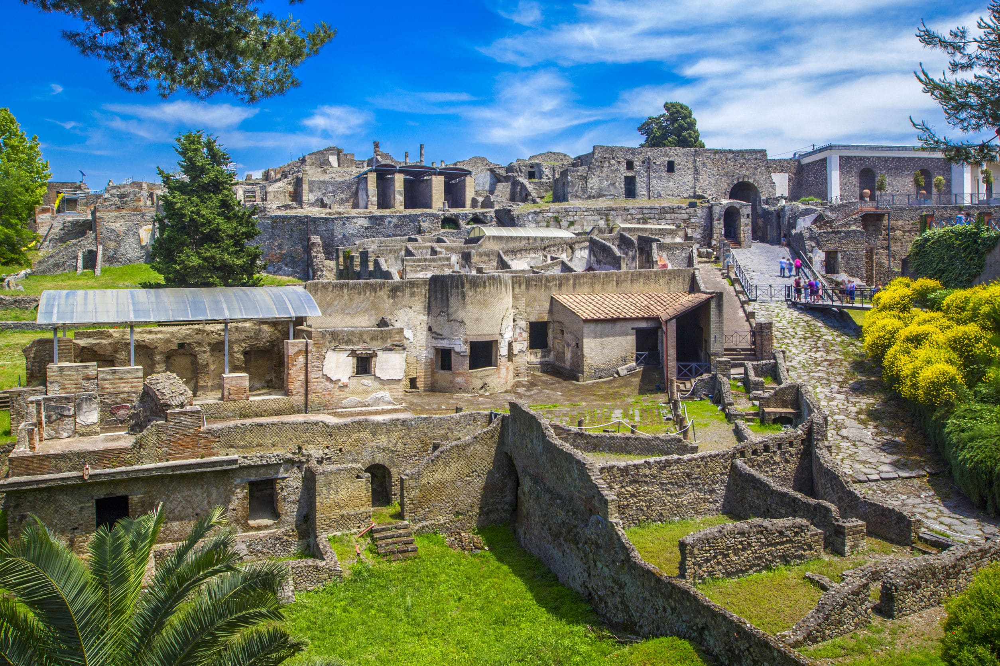

A Place of Trade

Pompei was an ancient city located in the modern comune of Pompei near Naples in the Campania region of Italy. Pompeii, along with Herculaneum and many villas in the surrounding area (e.g. at Boscoreale, Stabiae), was buried under 4 to 6 m (13 to 20 ft) of volcanic ash and pumice in the eruption of Mount Vesuvius in AD 79.
Largely preserved under the ash, the excavated city offered a unique snapshot of Roman life, frozen at the moment it was buried, and an extraordinarily detailed insight into the everyday life of its inhabitants, although much of the evidence was lost in the early excavations. It was a wealthy town, enjoying many fine public buildings and luxurious private houses with lavish decorations, furnishings and works of art which were the main attractions for the early excavators. Organic remains, including wooden objects and human bodies, were entombed in the ash and decayed leaving voids which archaeologists found could be used as moulds to make plaster casts of unique and often gruesome figures in their final moments of life. The numerous graffiti carved on the walls and inside rooms provide a wealth of examples of the largely lost Vulgar Latin spoken colloquially at the time, contrasting with the formal language of the classical writers.
Pompeii is a UNESCO World Heritage Site and is one of the most popular tourist attractions in Italy, with approximately 2.5 million visitors annually.
After many excavations prior to 1960 that had uncovered most of the city but left it in decay, further major excavations were banned and instead they were limited to targeted, prioritised areas. In 2018, these led to new discoveries in some previously unexplored areas of the city.